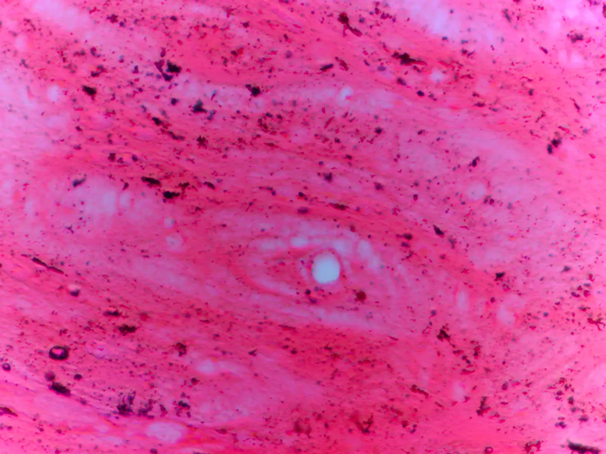

Lâmina 14 · A classificar
Lâmina 14

Toque na imagem para ampliar. No computador, use as setas do teclado para trocar de imagem.
Lâmina 14 · A classificar

Toque na imagem para ampliar. No computador, use as setas do teclado para trocar de imagem.